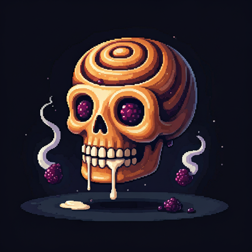

💀 Bone Appétit Cinnamon Skulls 💀

Description:
Sink your sweet tooth into these devilishly delicious skull-shaped treats! Each Bone Appétit Cinnamon Skull is a perfectly spooky pastry filled with creamy vanilla 'marrow' and weeping berry jam eyes. Dusted with our signature Graveyard Dirt topping, these haunted swirls are simply to die for. They're scarily scrumptious – perfect for breakfast, dessert, or summoning your sweet cravings from beyond!
Back to Recipes
Ingredients:
For the Skull Dough
- 4 cups Cursed All-Purpose Flour (regular flour blessed under a full moon)
- 2 Phantom Eggs (from free-range ghost chickens)
- 1 cup Warm Witch's Milk (heated to exactly 37°C - body temperature, of course)
- 2¼ tsp Undead Yeast (still active, just like our spirits)
- ¼ cup Cemetery Butter (churned by moonlight)
- ¼ cup Soul Sugar (ethically sourced)
- 1 tsp Grave Salt
For the Filling
- 1 cup Marrow Cream (vanilla bean custard)
- ½ cup Cemetery Berry Jam (mixed berries from the graveyard garden)
- 1 cup Brown Sugar (aged in a crypt)
- 2 tbsp Graveyard Cinnamon
- ⅓ cup Melted Cemetery Butter
For the Graveyard Dirt Topping
- ½ cup Soul Sugar
- 2 tbsp Midnight Cinnamon
- 1 tsp Activated Charcoal (for that authentic dirt look)